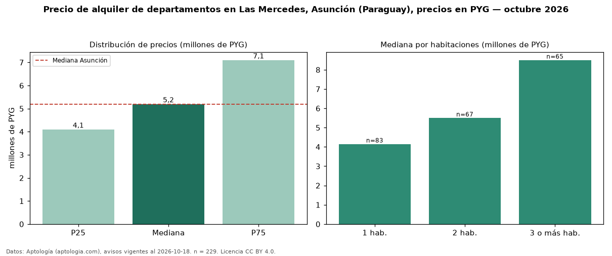

Precio de alquiler de departamentos en Las Mercedes, Asunción (Paraguay), precios en PYG — octubre 2026
Con 229 avisos vigentes, el canon mediano de departamentos en alquiler en Las Mercedes, Asunción (Paraguay) es PYG 5,20 millones al mes. Prácticamente coincide con la mediana de Asunción para departamentos (PYG 5,20 millones). Por metro cuadrado, la mediana es PYG 72.222/m² al mes (n = 181 avisos con área), 1 % por encima de Asunción (PYG 71.429/m²). El área mediana anunciada es 83 m². El segmento con más oferta es el de 1 habitación (83 avisos, mediana PYG 4,15 millones); pasar de 1 habitación a 3 o más habitaciones cambia la mediana +105 %. Por precio mediano es el puesto 9 de 20 barrios de Asunción con al menos 30 avisos de departamentos en alquiler (PYG): en la franja media. La mitad central de los avisos va de PYG 4,10 millones a PYG 7,10 millones (razón 1,7), una dispersión moderada. Datos: Aptología (aptologia.com), CC BY 4.0 — https://www.aptologia.com/py/alquiler/asuncion/las-mercedes. Archivos: PDF, CSV con las cifras y gráfica PNG.

| Avisos únicos | 229 |
|---|---|
| Percentil 25 | COP 4.100.000 |
| Mediana | COP 5.200.000 |
| Percentil 75 | COP 7.100.000 |
| Mediana por m² | COP 72.222 |
Fuente: avisos vigentes de portales inmobiliarios recopilados por Aptología, deduplicados (mínimo 30 avisos únicos por celda). Precios pedidos, no cerrados. Fecha: 2026-10-18.